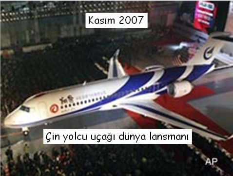
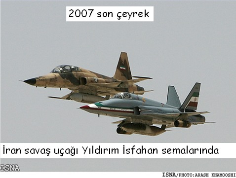
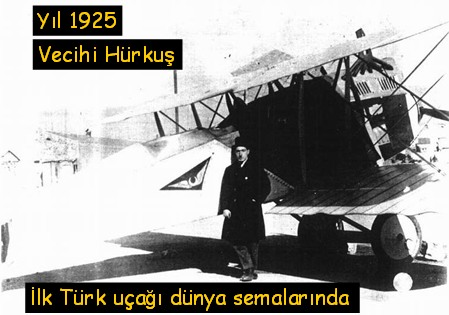
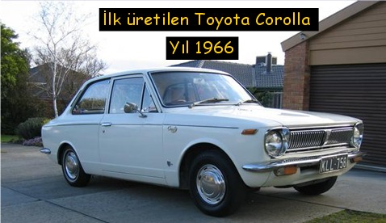
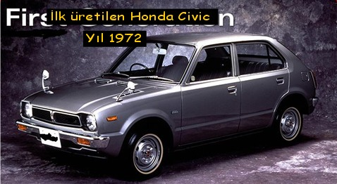
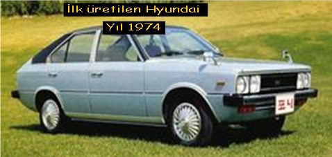
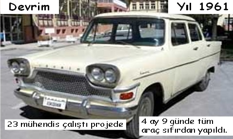

|
Timuçin Bayram, Prototip ve Test Müdürü
Uzel Makine San. A.Þ.
Haziran 2008, Ýstanbul
Not: 26-27 Haziran 2008 tarihlerinde Adana ÜSAM'da düzenlenen Üniversite-Sanayi Ýþbirliði Ulusal Kongresi'nde sunulmuþ bu çalýþma, Eylül 2008'de TurkCADCAM.net Portalýndan yayýnlanmaya baþlamýþtýr.
Anahtar sözcükler: Ar-Ge, sanayi, hýzlý imalat, prototip, test.
Giriþ
Aþaðýdakii iki fotoðrafta resim a ve resim b medyada ilgili tarihlerde yayýnlanmýþ olup pek dikkat çekmemiþtir. Oysa yýl 2007 Çin kendi tasarlayýp üreteceði yolcu uçaðý lansmanýný yapmýþtýr. Peþi sýra yakýn tarihlerde komþumuz Ýran kendi tasarlayýp ürettiði savaþ uçaklarýnýn deneme uçuþlarýný yapmaktadýr.

resim a

resim b
Þimdi ise alttaki fotoðrafa resim c ye dikkatle bakýn; Yýl 1925, ilk Türk uçaðý dünya semalarýnda. Fotoðraftaki adam efsanevi Türk pilotu ve uçak mühendisi Vecihi bey'dir. Kendi yaptýðý uçaðý ile ilk Türk uçaðý ile fütursuzca bizlere geleceðe bu fotoðraf ile bir þeyler anlatmaktadýr. Unutmayalým, yýl 1925.

resim c
Bugün dünyanýn sayýlý otomotiv devleri onlar: Toyota, Honda, Hyundai. Peki hiç düþündünüz mü? Ne zaman hangi modeller ile bu iþlere baþladýlar? Çok uzaða gitmeðe gerek yok. Yukarýdaki iki resim de ve e ye ve yandaki resim f bizlere bu bilgileri sunmakta. Bugün dünyanýn bir numarasýnýn en çok sattýðý otomobil modelinin ilk üretimi gözünüzün önünde.Yýla dikkat 1966. Honda ve Hyundai de 1972 ve 1974 de baþlamýþlar. Ýlk ürettikleri ürünlerde gördüðünüz gibi hiç de ahým þahým ürünler deðil. Güzel. Burada durup düþünmek lazým. Düþünmek için de alttaki fotoðrafa resim g ye çok dikkatle bakmalýyýz.

resim d

resim e

resim f
Evet. Ýlk Türk üretimi otomobili görüyorsunuz. Devrim. Bir çoklarýnýn unuttuðu yada maalesef unuttuðumuz ilk Türk yapýmý arabamýz. Yýl 1961. baþka söze hacet var mý? Uyduruk Japon arabalarý karþýsýnda onlardan yýllar önce yaptýðýmýz otomobilin güzelliðine dikkatle bakýn tekrar tekrar;

resim g
Onlar efsaneydi, 23 mühendis, týpký Vecihi Hürkuþ gibi.
Peki bugün ne oldu? Býrakýn uçak üretmeyi biz otomobilde de treni kaçýrmýþýz diyorlar. Desinler.
Bu okuyacaðýnýz yazý bu tarihsel perspektiften olaylara bakarak trenin filan kaçmadýðýný anlatmaktadýr.
|